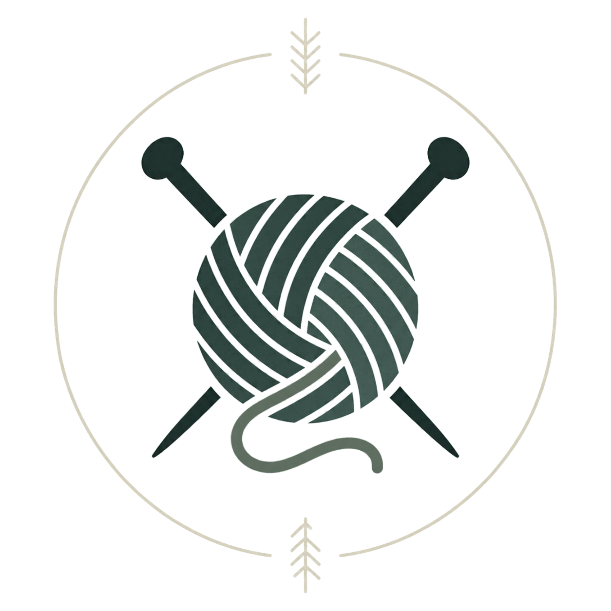
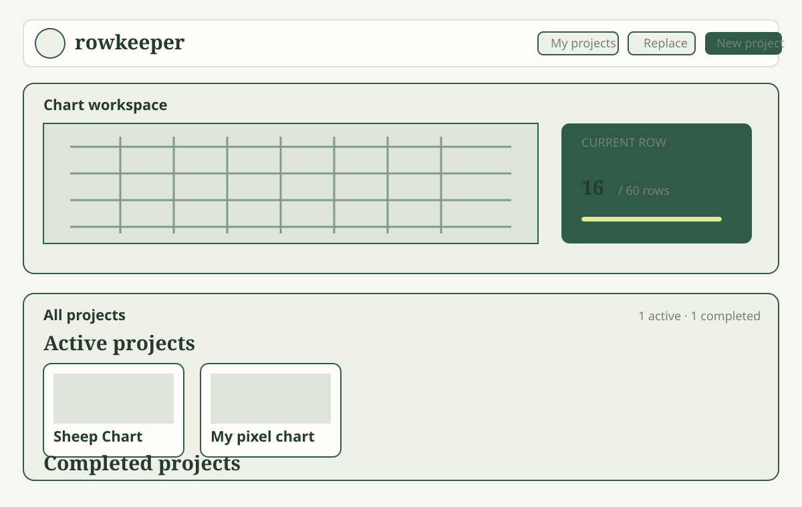

Project library
JavaScript reads the saved project array and creates image-based cards with a title, row progress, completion state, and controls.

WDD 131 · App plan
A simple, visual way to keep your place in knitting and crochet colorwork charts.
01 · Purpose and audience
Rowkeeper helps knitters and crocheters upload or draw a chart, highlight the row they are working on, and save their progress directly in the browser. The project library makes it easy to return to a saved chart, switch between works in progress, and separate active projects from completed ones.
The intended audience is anyone who works from knitting or crochet colorwork and pixel-style charts and wants a focused digital companion while crafting. It is designed for beginners who need clear row guidance as well as experienced makers who want a lightweight, offline-friendly project tracker.
02 · Dynamic elements
JavaScript reads the saved project array and creates image-based cards with a title, row progress, completion state, and controls.
Buttons and keyboard controls update the current row, progress bar, direction, repeat behavior, and chart overlay.
IndexedDB stores projects, images, notes, settings, drawn chart cells, and progress so the app can work on the same device without an account.
Conditional logic moves completed projects into their own library section and lets users return them to the active list.
03 · Pseudocode
START application
open the browser database
IF saved projects exist
load the projects array
activate the last open project
ELSE
show the empty project state
WHEN the user opens My projects
split projects into active and completed arrays
create a card for each project
show active cards first and completed cards below
WHEN the user selects a project card
set that project as active
show its chart image and saved settings
WHEN the user finishes a row
update the current row and progress
apply repeat or completed logic when needed
save the project to the browser database
WHEN the user marks a project complete
change the project's complete value
re-render the active and completed sections
save the new project state
WHEN the user deletes a project
ask for confirmation
remove the project from the projects array
update the library and save the database
END application04 · Wireframe
The main chart view and the in-page project library use the same header and switch through the “My projects” button.
